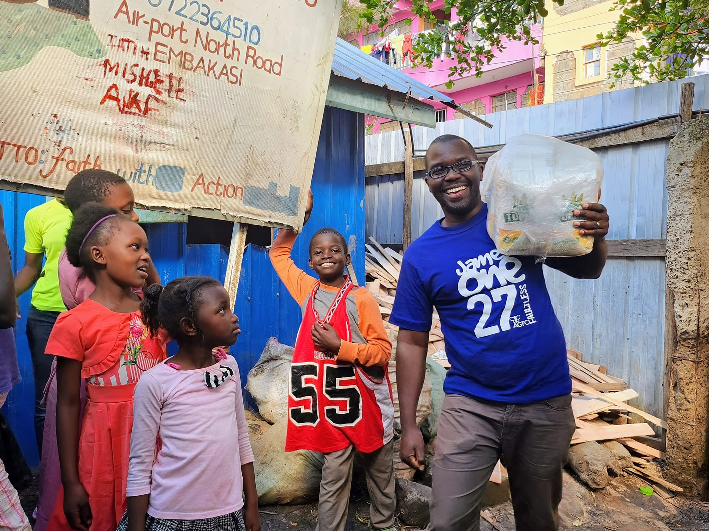

Vulnerable People
Reaching vulnerable and less privileged members of society and responding to their material needs.
Reaching people, supporting communities and responding to practical needs with faith, hope and love.

Amazing Grace Family Care Foundation reaches out to vulnerable and less privileged people within society.
Through practical care and community outreach, AGFC seeks to respond to material needs while bringing faith, hope and love to the people it reaches.
Our outreach is about seeing a need, showing compassion and taking practical steps to make a difference.
Our community work focuses on people and places where care, encouragement and practical support are needed.
Reaching vulnerable and less privileged members of society and responding to their material needs.
Connecting with children's homes and extending practical care and support to children in need.
Supporting people within the community through compassion, generosity and practical assistance.
Amazing Grace Family Care Foundation has shared outreach activities involving children's homes within Mradi Embakasi.
One of the foundation's shared outreach activities was a visit to Faith in Action Children's Home in Mradi Embakasi.
The outreach reflects AGFC's commitment to extending care beyond its immediate circle and supporting children and institutions within the community.
Connect With AGFC →
Connect with Amazing Grace Family Care Foundation and be part of a community committed to practical care and compassion.

Pastor Gladyce Atemba is the founding vision bearer of Amazing Grace Family Care Foundation. Her desire to see faith expressed through practical care became one of the driving forces behind the establishment of the foundation.
Through years of ministry, teaching and community engagement, she has encouraged people to look beyond themselves and respond to the needs of others with compassion and dignity.
Her vision continues to influence the foundation's commitment to faith, hope, love and practical community service.